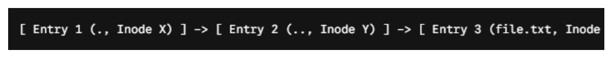
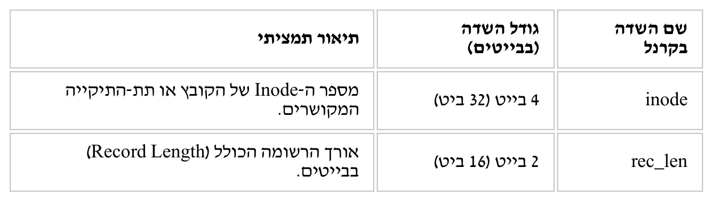
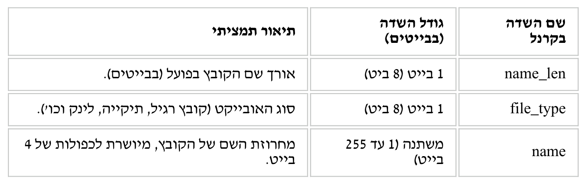
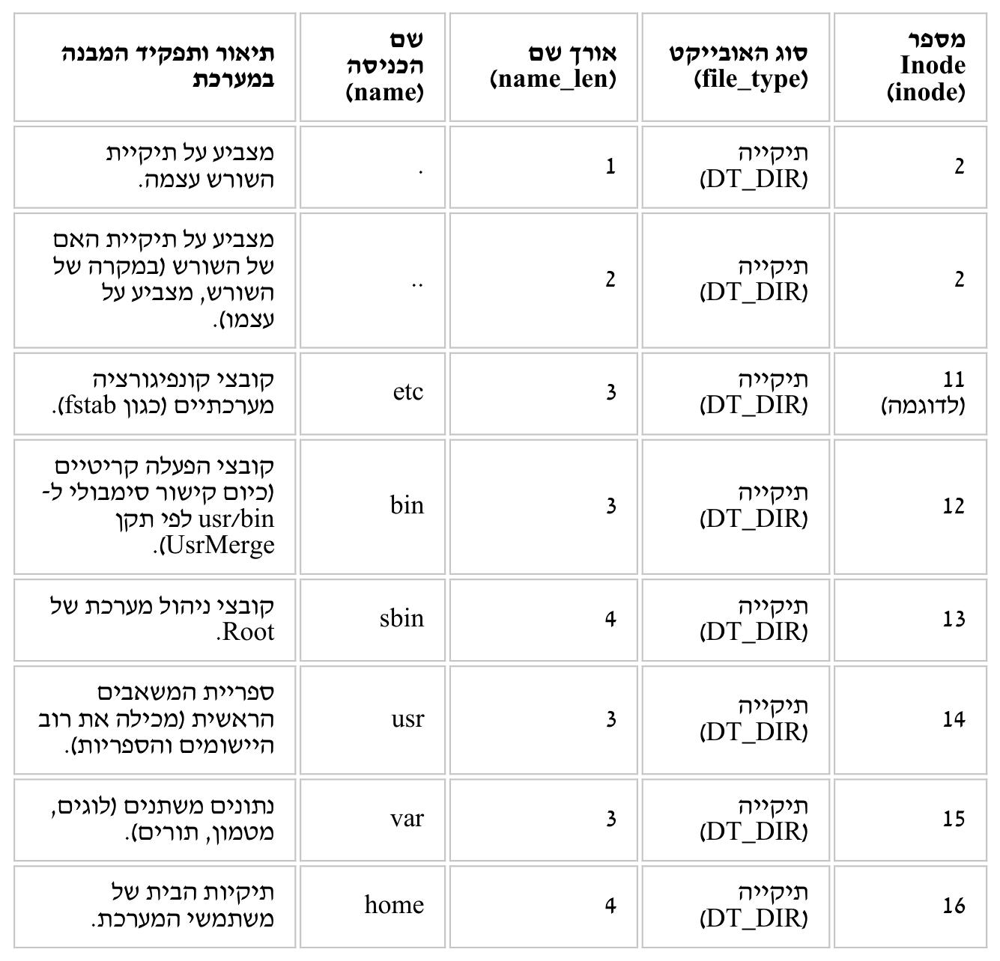
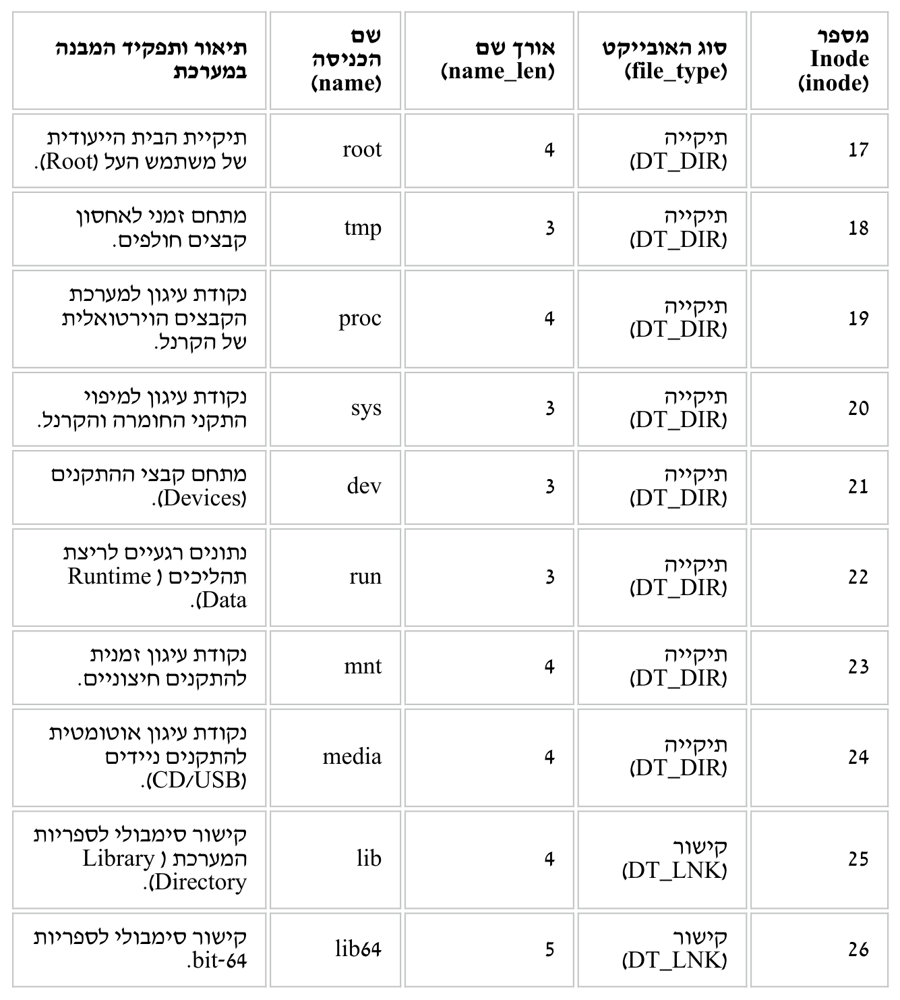

File Descriptors, Inodes וארכיטקטורת I/O
⏱ זמן משוער: 50 דק'
1. הרעיון הגדול — מערכת הקבצים בנויה משתי יחידות ניהול
בשיעורים הקודמים ראינו ש-open() מחזירה מספר שלם קטן, ושכל ה-I/O של התוכנית
(read(), write()) עובר דרך המספר הזה. השיעור הזה פותח את הקופסה: מה באמת
עומד מאחורי המספר, ואיך מערכת הקבצים ext4 שומרת קובץ על
התקן האחסון.
כדי לשרת בקשה כמו "פתח לי את /home/Itzhak/lecture01", מערכת הקבצים חייבת לענות על שתי שאלות שונות לגמרי: מי הקובץ הזה — מי הבעלים, מה מותר לעשות בו, מה גודלו, ואיפה שמורים הבתים שלו; ומה יש בתוכו — הבתים עצמם. לכל אחת מהשאלות יש יחידת ניהול משלה, ושתיהן יחד מרכיבות את המבנה הפנימי של מערכת הקבצים.
המונחים שצריך להכיר לפני שממשיכים
אם לא עבדתם קודם עם לינוקס, אלה המילים שיחזרו לאורך כל העמוד. שווה לקרוא את הטבלה פעם אחת לאט:
| מונח | מה זה, בשורה אחת |
|---|---|
| בלוק (Block) | יחידת האחסון שמערכת הקבצים מקצה בפועל — לא בית בודד, אלא מקטע קבוע. ב-ext4 בלוק סטנדרטי הוא 4096 בייט (4KB). קובץ קטן תופס בלוק שלם; קובץ גדול פרוס על הרבה בלוקים. |
| מטא-דאטה (Metadata) | "נתונים על הנתונים" — כל מה שמתאר את הקובץ ואינו התוכן שלו: בעלים, הרשאות, גודל, זמנים, ומפת הבלוקים שלו. |
| NVM — Non-Volatile Memory | זיכרון שאינו נדיף: התקן האחסון הקבוע (ה-SSD). מה שנשמר בו שורד כיבוי חשמל, ושם יושבים גם טבלת ה-Inodes וגם ה-Data Blocks. זהו הקיצור שבו המרצה משתמש בשאלות המבחן. |
| MM — Main Memory | הזיכרון הראשי (ה-RAM): מהיר, אך נדיף — מתאפס בכיבוי. כאן חיים המבנים הזמניים שהקרנל בונה בזמן ריצה, כפי שנראה בסעיף 2. |
| אינדקס (Index) | מספר סידורי של תא במערך — "התא ה-3". זה בדיוק מה שיהיה ה-File Descriptor בסעיף 5. |
| מצביע (Pointer) | ערך ששומר כתובת של משהו אחר במקום את הדבר עצמו: "מה שאתה מחפש נמצא שם". בתוך ה-Inode המצביעים מובילים אל הבלוקים; בתוך טבלת ה-FD המצביעים מובילים לאובייקטי קרנל. |
🎓 מהשיעור בכיתה (מהמחברת) מהסקטור אל הבלוק — האנטומיה הפיזית של ההתקן
לפני שדיברנו על Inodes, המרצה צייר על הלוח דיסק קשיח (HD) ופירק אותו: ערימת פלטות מסתובבות וראש קריאה שנע מעליהן. מכאן הגיעו שלושת המושגים:
- מסלול (Track): מעגל אחד על הפלטה. בכל פלטה יש אלפי מסלולים. האנלוגיה שהמרצה נתן: מסלול הוא כמו נתיב בכביש.
- סקטור (Sector): כל מסלול מחולק לסקטורים, וזו היחידה הקטנה ביותר שאפשר לקרוא או לכתוב — כיום 512 בייט. קריאה או כתיבה היא תמיד של סקטור שלם בלבד: גם אם התוכנית רוצה בייט אחד, החומרה מביאה 512.
- מהירות: נגזרת מקצב הסיבוב של הפלטות — RPM.
ומכאן החיבור לשורה הראשונה בטבלה שלמעלה: בלוק אחד = 8 סקטורים × 512 בייט = 4096 בייט. זהו הגשר בין היחידה הפיזית של החומרה (סקטור) לבין היחידה הלוגית שמערכת הקבצים מקצה בפועל (בלוק):
התרשים הבא מראה את החלוקה בפועל: משמאל רשומת Inode אחת עם שדות המטא-דאטה שלה, ומימין הבלוקים שאליהם היא מצביעה דרך מפת הבלוקים (עץ ה-Extents):
🎓 מהשיעור בכיתה (מהמחברת) איפה יושבות שתי היחידות על הדיסק — Block Groups של ext4
בכיתה המרצה הציג תרשים שאינו מופיע בשקפים: מחיצת ה-rootfs אינה "ערימה אחת" של Inodes ובלוקים, אלא מחולקת ל-Block Groups — קבוצות בלוקים עוקבות, וכל אחת מהן היא מערכת קבצים קטנה בפני עצמה עם המבנה הפנימי הזה, לפי הסדר:
Block
Descriptors
Bitmap
Bitmap
Table
Blocks
- Super Block: "תעודת הזהות" של מערכת הקבצים — הפרמטרים הכלליים שלה.
- Group Descriptors: מתארים היכן בדיוק יושב כל אחד מהחלקים בכל קבוצה.
- Block Bitmap ו-Inode Bitmap: שתי מפות ביטים — ביט לכל בלוק וביט לכל Inode — שמסמנות מה תפוס ומה פנוי. זו התשובה לשאלה "מאיפה הקרנל יודע איזה Inode פנוי?" שתחזור בסעיף 4.
- Inode Table ו-Data Blocks: שתי יחידות הניהול שהוצגו למעלה — ועכשיו ברור גם איפה הן יושבות פיזית.
ברמה שמעל, פריסת ההתקן כולה (כפי שנוצרה בשלב ההתקנה, מודול 2) היא: GPT | bootloader | rootfs partition | Home partition | swap — וה-Inode Table וה-Data Blocks יושבים בתוך מחיצת ה-rootfs.
המודל הזה אחיד לכל דבר במערכת — גם תיקייה היא קובץ לכל דבר ועניין: יש לה Inode משלה שמצביע ל-Data Blocks, ורק התוכן של הבלוקים שלה שונה. לזה נגיע בסעיף 3.
מקור: directory.pdf · In-core inodes vs. disk inodes.pdf
2. Disk Inode מול In-Core Inode
המילה "Inode" מסתירה למעשה שני מבנים שונים — אחד על ה-NVM ואחד ב-MM — וההבחנה ביניהם היא לב השיעור: הפרדה בין אחסון פסיבי (Persistent) לבין זיכרון פעיל (Transient Runtime State).
Disk Inode — הפיזי והפסיבי
מבנה נתונים סטטי ופסיבי השמור באופן קבוע (Persistent) בתוך טבלת ה-Inodes על גבי התקן האחסון (ה-SSD). הוא נשמר לאורך זמן — גם כשהמחשב כבוי לחלוטין — ותפקידו לשמור את ההיסטוריה והמבנה של הקובץ:
- הקצאה: נוצר פעם אחת בלבד — בעת עיצוב מערכת הקבצים (Formatting באמצעות
mkfs.ext4) או בעת יצירת קובץ חדש — ותופס נפח פיזי קבוע מראש, בדרך כלל 256 בייט ב-ext4. - שדות:
i_mode(סוג + הרשאות),i_uid/i_gid(בעלים),i_size_lo/i_size_high(גודל מדויק בבייטים), חותמות זמן (atime, mtime, ctime, dtime),i_links_count(מונה קישורים קשיחים), ושורש עץ ה-Extents /i_block(המיפוי הפיזי של הבלוקים). - מה אין בו: אף שדה ניהול זמני — לא מנעולים ולא משתני סנכרון. הדיסק הפסיבי אינו מודע כלל לשאלה האם מישהו משתמש בקובץ כרגע, ואינו מסוגל לנהל מנעולים בזמן אמת.
🎓 מהשיעור בכיתה (מהמחברת) איך קוראים את שדה ההרשאות בפועל — ls -l, 755 ו-chmod 700
מה זה עושה: הפקודה ls -l מדפיסה שורה לכל קובץ, ובתחילתה
מחרוזת ההרשאות של שדה ה-i_mode שראינו. המרצה פירק אותה על הלוח כך:
-rwxr-xr-x Dor Dor prog
^ ^^^ ^^^ ^^^
| | | +--- others = 5 (r-x)
| | +------- group = 5 (r-x)
| +----------- owner = 7 (rwx)
+-------------- file type: '-' regular file, 'd' directory- שלוש שלישיות של rwx, לפי הסדר: owner (הבעלים),
group (הקבוצה), others (כל השאר) — בדיוק החלוקה שבשדה
i_mode. - הצורה המספרית: r=4, w=2, x=1. הדוגמה שניתנה בכיתה — 7 5 5 — פירושה rwx לבעלים ו-r-x לקבוצה ולשאר.
- chmod 700 — הרשאות מלאות לבעלים בלבד, ואפס לקבוצה ולשאר. המרצה השתמש בזה בתרגיל ההעתקה (מודול 6).
- umask — מסכת ברירת המחדל שמסננת
את ההרשאות של כל קובץ חדש שנוצר. הפירוט המלא של החישוב האוקטלי נמצא במודול
6, בסעיף הארגומנט mode של
open().
התרחיש שצויר בכיתה כדי להמחיש למי שייכות ההרשאות: הקובץ /etc/passwd שרק
מנהל המערכת (SysAdmin) רשאי לשנות; המשתמש Dor שיוצר
לעצמו תיקייה בעזרת mkdir ובתוכה את prog.c ואת קובץ ההרצה
prog; והפקודה /bin/cp שכולם רשאים להריץ.
In-Core Inode — struct inode בזיכרון הליבה
כאשר קובץ נפתח או נמצא בשימוש פעיל, הקרנל טוען את המטא-דאטה שלו מה-NVM אל ה-MM
(ה-RAM) ויוצר עבורו אובייקט דינמי במרחב הליבה — ה-In-Core
Inode, המיוצג בלינוקס על ידי struct inode. המבנה הזה
אינו קיים על הדיסק בצורתו זו: הוא נוצר בעת פתיחת הקובץ (או בפתרון נתיבים) ומשוחרר
מהזיכרון כאשר אף תהליך אינו משתמש עוד באובייקט — כלומר כשמוני ההפניה שלו מגיעים לאפס. בנוסף לעותק של
נתוני ה-Disk Inode, הוא מכיל שדות שקיימים רק בזמן ריצה:
- מוני הפניה ושימוש (i_count, i_nlink): כמה תהליכים או אובייקטים בזיכרון מצביעים כרגע על ה-Inode — כדי לנהל את מחזור החיים שלו בזיכרון.
- מנעולים וסינכרון (
i_rwsem, Semaphores & Mutexes): כשמספר תהליכים או נימים (Threads) קוראים וכותבים לאותו קובץ בו-זמנית, המנעולים בזיכרון מונעים מצבי תחרות (Race Conditions). - דגל "מלוכלך" (I_DIRTY): מעיד שהקובץ או המטא-דאטה שונו
ב-RAM (למשל הגודל השתנה בעקבות
write) אך טרם נכתבו פיזית ל-Disk Inode שעל ה-SSD. הקרנל משתמש בו כדי לבצע Flush מסודר בעתיד. - מצביעי פונקציות (i_op / i_fop): פוינטרים לפונקציות גנריות שמאפשרים לקרנל להפעיל פקודות אחידות על כל מערכת קבצים.
| מאפיין השוואה | Disk Inode (הפיזי) | In-Core Inode (בזיכרון הליבה) |
|---|---|---|
| מיקום פיזי | שורות מטא-דאטה צרובות בתוך ה-SSD (Inode Table) | אובייקט בזיכרון הליבה (struct inode) ב-RAM |
| מחזור חיים | פרסיסטנטי (Persistent): מתקיים ללא הגבלת זמן, גם בכיבוי המערכת | זמני (Transient): מתקיים כל עוד הקובץ פתוח או בשימוש פעיל |
| סינכרון ומנעולים | אינו קיים (הנתונים פסיביים לחלוטין) | קריטי ומרכזי (מנעולים, סמפורים ומוני הפניה כמו i_count) |
| מעקב שינויים (Dirty State) | אינו קיים; הדיסק שומר מצב קבוע | קיים; דגלים המעידים האם הנתונים בזיכרון שונים מהדיסק |
| תפקיד בארכיטקטורה | שמירה ארוכת טווח של היסטוריית הקובץ והבלוקים שלו | ממשק פעיל ל-VFS: הרצת קריאות מערכת וניהול גישה בו-זמנית |
כך זה נראה בחוברת של המרצה:
![טבלת השוואה בת חמש שורות בין Disk Inode ל-In-Core Inode: מיקום פיזי — שורות מטא-דאטה צרובות ב-SSD (Inode Table) מול אובייקט בזיכרון הליבה (struct inode) ב-RAM; מחזור חיים — פרסיסטנטי, מתקיים ללא הגבלת זמן גם בכיבוי, מול זמני (Transient) כל עוד הקובץ פתוח או בשימוש; ניהול סינכרון ומנעולים — אינו קיים כי הנתונים פסיביים, מול קריטי ומרכזי עם מנעולים, סמפורים ומוני הפניה כמו i_count; מעקב שינויים (Dirty State) — אינו קיים, הדיסק שומר מצב קבוע, מול דגלים המעידים אם הנתונים בזיכרון שונים מהדיסק; תפקיד בארכיטקטורה — שמירה ארוכת טווח של היסטוריית הקובץ והבלוקים מול ממשק פעיל ל-VFS להרצת קריאות מערכת וניהול גישה בו-זמנית](../assets/pdf-figures/05-fd-inodes/incore-vs-disk-inode-table.png)
ההשלכה המעשית על תכנות מערכות
למי שכותב קוד ברמת ה-System Calls, ההבחנה הזו מסבירה שלוש תופעות קריטיות:
close()אינה בהכרח כותבת מיד את הנתונים לדיסק — היא משחררת את ההפניה ב-In-Core Inode. שינויים שסומנו I_DIRTY ייכתבו ל-SSD ב-Flush מסודר בהמשך. כלומר: "close()הצליחה" ≠ "הנתונים כבר על הדיסק" — מלכודת מבחן קלאסית.- נעילת קבצים היא עניין של הקרנל — מצבי הנעילה מנוהלים ברמת ה-In-Core Inode בזיכרון, כי הדיסק הפסיבי לא מסוגל לנהל מנעולים בזמן אמת.
- מטמון ה-Inodes (inode_cache) ממקסם ביצועים — קובץ שכבר היה בשימוש נשאר ב-RAM, כך שלא צריך לגשת ל-SSD האיטי בכל פעם שתהליך פותח אותו מחדש.
מקור: In-core inodes vs. disk inodes.pdf · open.pdf
3. תיקייה היא קובץ — struct ext4_dir_entry_2
אנחנו רגילים לחשוב על תיקייה כ"מגירה" שמכילה קבצים. במערכת הקבצים ext4 (בסביבת
Linux Kernel 6.14) התמונה אחרת: תיקייה היא
קובץ לכל דבר ועניין — יש לה Inode משלה שמצביע ל-Data Blocks, בדיוק כמו לקובץ טקסט.
ההבדל הקרדינלי אינו במבנה ה-Inode אלא בתוכן של הבלוקים: במקום תוכן גולמי, הם מכילים
רשימת רשומות שמקשרות בין שם קובץ לבין מספר ה-Inode שלו. תיקייה,
במילים אחרות, היא בסך הכול טבלת שמות. רשומות אלה נקראות
Directory Entries, ובגרסת ext4 המודרנית:
ext4_dir_entry_2.
בלוק נתונים סטנדרטי של תיקייה בגודל 4096 בייט (4KB) אינו מחולק לתאים קבועים מראש, אלא בנוי כרצף צפוף של רשומות באורכים משתנים (Variable-length Records) הארוזות זו אחר זו בצורה לינארית:
( . , Inode X )
( .. , Inode Y )
( file.txt , Inode Z )
rec_len ← עד סוף ה-4KB
כך זה נראה בחוברת של המרצה:

המבנה הפנימי של רשומה בודדת
מה המבנה הזה עושה: הוא מתאר שורה אחת בתוך בלוק התיקייה — "לשם הזה שייך ה-Inode הזה" — ובנוסף מספר לקרנל כמה בתים לדלג כדי להגיע לשורה הבאה. גודלו משתנה מרשומה לרשומה, והוא מורכב מחמישה שדות:
| שם השדה בקרנל | גודל השדה (בבייטים) | תיאור תמציתי |
|---|---|---|
inode | 4 בייט (32 ביט) | מספר ה-Inode של הקובץ או תת-התיקייה המקושרים. |
rec_len | 2 בייט (16 ביט) | אורך הרשומה הכולל (Record Length) בבייטים. |
name_len | 1 בייט (8 ביט) | אורך שם הקובץ בפועל (בבייטים). |
file_type | 1 בייט (8 ביט) | סוג האובייקט (קובץ רגיל, תיקייה, לינק וכו'). |
name | משתנה (1 עד 255 בייט) | מחרוזת השם של הקובץ, מיושרת לכפולות של 4 בייט. |
כך זה נראה בחוברת של המרצה:


4B
2B
1B
1B
1–255B
→ ×4B
מה חשוב לדעת על כל שדה
inode: כשמשתמש פותח למשל את /etc/passwd, הקרנל קורא את בלוק הנתונים של תיקיית השורש, סורק את השמות עד שהוא מוצא התאמה, שולף את מספר ה-Inode (למשל Inode 12345) — ופונה איתו ישירות לטבלת ה-Inodes כדי לטעון את המטא-דאטה. מקרה קצה: אם השדה מאופס (0), הרשומה ריקה או נמחקה, והקרנל מתעלם ממנה בזמן הסריקה.rec_len: מכיוון ששמות קבצים הם באורכים משתנים, הקרנל לא יכול "לקפוץ" בצעדים קבועים. מעבר לרשומה הבאה = כתובת תחילת הרשומה הנוכחית +rec_len. הערך חייב להיות תמיד מיושר (Aligned) לכפולות של 4 בייט, וברשומה האחרונה בבלוק הוא משתרע עד לסוף בלוק ה-4KB המלא — כלומר בולע את כל הנפח הפנוי שנותר.name_len: אורך השם בפועל (עבור main.c — הערך 6). מאפשר לקרנל לדעת בדיוק כמה תווים לקרוא ולהשוות, מבלי להסתמך בהכרח על תו סיום מחרוזת (\0).file_type: סוג האובייקט — קובץ רגיל DT_REG, תיקייה DT_DIR, קישור סימבולי DT_LNK. במערכות ישנות יותר (ext2) הקרנל נאלץ לגשת פיזית לטבלת ה-Inodes ולבדוק אתi_modeרק כדי לדעת אם זה קובץ או תיקייה; ב-ext4 שמירת הסוג ישירות ברשומה חוסכת את הגישה הזו ומאיצה דרסטית פקודות כמו ls -l וסריקות עצי ספריות.name: מחרוזת השם. מכיוון שכל רשומה חייבת להתחיל בכתובת שהיא כפולה של 4 בייט, אחרי סוף השם מוסיפים בייטים ריקים (Padding) עד היישור הנדרש.
איך עובד rm? מחיקה לוגית והטריק של rec_len
מנגנון המחיקה מדגים בצורה מושלמת את חשיבות השדה — ארבעה צעדים:
- במחיקת קובץ (באמצעות
unlink) הקרנל אינו מזיז את שאר הרשומות בבלוק ולא מאפס את כל הבייטים מחדש — פעולה שהייתה כבדה ואיטית. - במקום זאת, הוא מאפס את שדה ה-
inodeשל הרשומה ל-0 (מסמן אותה כלא תקפה). - ואז מנווט אל הרשומה הקודמת בשרשרת ומעדכן את ה-
rec_lenשלה כך ש"יבלע" לתוכו גם את השטח של הרשומה שנמחקה. - השטח שנמחק הופך לחלק מה-Padding של הרשומה הקודמת — "מקום פנוי" (Free Space) שבו יוכל להיכנס בעתיד קובץ חדש שייווצר באותה תיקייה, אם גודלו יתאים למרווח.
rec_len = 16
rec_len = 16
rec_len → block end
rec_len → block end
למה בכלל צריך את rec_len?
זו השאלה שהמרצה מדגיש: לכאורה, אם ידועים הגדלים הקבועים של השדות ואורך השם שמור ב-name_len,
אפשר לחשב מתמטית היכן מתחילה הרשומה הבאה. אבל ישנן שתי סיבות קריטיות שבגללן השדה הכרחי
לחלוטין:
- יישור וריפוד (Alignment & Padding): בארכיטקטורות מודרניות (כמו
x86_64), גישה לזיכרון בכתובות לא מיושרות גורמת לעונשי ביצועים חמורים או אפילו
לשגיאות חומרה (Bus Fault). כל רשומה חייבת להתחיל בכפולה של 4 בייט, ולכן הגודל
התיאורטי של השדות + השם אינו בהכרח הגודל האמיתי בזיכרון — הוא כולל גם את בייטי
הריפוד.
rec_lenהוא המספר האמיתי והמדויק: "כדי להגיע לרשומה הבאה, קפוץ בדיוק X בייטים". - ניהול מקום פנוי ומחיקות (הסיבה המרכזית): אחרי מחיקה לוגית, ה-
rec_lenשל הרשומה הקודמת גדול במתכוון מהגודל התיאורטי שלה — כדי לדלג מעל השטח המת ולהצביע ישירות על הרשומה החוקית הבאה. בלעדיו הקרנל לא היה יודע להתעלם משטחים מתים ולא היה מנצל אותם מחדש בלי פעולות דחיסה (Defragmentation) כבדות בכל מחיקה.
מקור: directory.pdf
4. תיקיית השורש (/) — מה באמת יש בבלוק שלה
עכשיו כשאנחנו יודעים איך נראה בלוק של תיקייה, אפשר להסתכל על התיקייה החשובה ביותר במערכת —
תיקיית השורש, זו שכל נתיב אבסולוטי מתחיל בה.
הטבלה הבאה היא התוכן המלא והקונקרטי של ה-Data Blocks שלה כפי שהוא נמצא על ה-NVM
מיד עם סיום התקנת Linux 6.14: כל תיקיות התשתית של תקן
ה-FHS (Filesystem Hierarchy Standard) שנוצרו בשלב ההתקנה.
כל שורה בטבלה היא בדיוק רשומת ext4_dir_entry_2 אחת מסעיף 3.
| inode | סוג (file_type) | name_len | שם (name) | תיאור ותפקיד |
|---|---|---|---|---|
| 2 | תיקייה (DT_DIR) | 1 | . | מצביע על תיקיית השורש עצמה. |
| 2 | תיקייה (DT_DIR) | 2 | .. | תיקיית האם של השורש — במקרה של השורש, מצביע על עצמו. |
| 11 (לדוגמה) | תיקייה (DT_DIR) | 3 | etc | קובצי קונפיגורציה מערכתיים (כגון fstab). |
| 12 | תיקייה (DT_DIR) | 3 | bin | קובצי הפעלה קריטיים (כיום קישור סימבולי ל-usr/bin לפי תקן UsrMerge). |
| 13 | תיקייה (DT_DIR) | 4 | sbin | קובצי ניהול מערכת של Root. |
| 14 | תיקייה (DT_DIR) | 3 | usr | ספריית המשאבים הראשית (רוב היישומים והספריות). |
| 15 | תיקייה (DT_DIR) | 3 | var | נתונים משתנים (לוגים, מטמון, תורים). |
| 16 | תיקייה (DT_DIR) | 4 | home | תיקיות הבית של משתמשי המערכת. |
| 17 | תיקייה (DT_DIR) | 4 | root | תיקיית הבית הייעודית של משתמש העל (Root). |
| 18 | תיקייה (DT_DIR) | 3 | tmp | מתחם זמני לאחסון קבצים חולפים. |
| 19 | תיקייה (DT_DIR) | 4 | proc | נקודת עיגון למערכת הקבצים הווירטואלית של הקרנל. |
| 20 | תיקייה (DT_DIR) | 3 | sys | נקודת עיגון למיפוי התקני החומרה והקרנל. |
| 21 | תיקייה (DT_DIR) | 3 | dev | מתחם קבצי ההתקנים (Devices). |
| 22 | תיקייה (DT_DIR) | 3 | run | נתונים רגעיים לריצת תהליכים (Runtime Data). |
| 23 | תיקייה (DT_DIR) | 4 | mnt | נקודת עיגון זמנית להתקנים חיצוניים. |
| 24 | תיקייה (DT_DIR) | 4 | media | נקודת עיגון אוטומטית להתקנים ניידים (CD/USB). |
| 25 | קישור (DT_LNK) | 4 | lib | קישור סימבולי לספריות המערכת (Library Directory). |
| 26 | קישור (DT_LNK) | 5 | lib64 | קישור סימבולי לספריות 64-bit. |
כך זה נראה בחוברת של המרצה:


מתי ואיך התוכן הזה נוצר?
התוכן אינו נוצר בזמן האתחול (boot) של המערכת, אלא בשלב הסופי של תהליך ההתקנה (Installation Phase) — בדיוק ברגע שבו תוכנית ההתקנה פירמטה את מחיצת ה-Root ב-ext4 והחלה לפרוס את עץ ה-FHS אל מחיצת ה-SSD. התהליך הקרנלי, כרצף קריאות מערכת של ה-Installer:
- אתחול השורש: ברגע שנוצרת מערכת הקבצים, הקרנל מקצה אוטומטית את Inode מספר 2 ומגדיר אותו כתיקיית השורש הראשית.
- נקודות העיגון הראשונות: נכתב בלוק הנתונים הראשון של השורש ובו מיד שתי הרשומות הבסיסיות — . ו-.. — שתיהן מצביעות על Inode 2.
- לולאת
sys_mkdir(): ה-Installer מריץ לולאה שקוראת לפונקציית המערכת עבור כל תיקייה ותיקייה (/etc, /bin, /var…). - לכל קריאת mkdir הקרנל: מוצא Inode פנוי ב-Inode Bitmap — מפת
ביטים שמסמנת אילו רשומות בטבלת ה-Inodes תפוסות ואילו פנויות (למשל Inode 11 עבור etc) ← מקצה לו
רשומה חדשה בטבלת ה-Inodes ← מוסיף Directory Entry חדשה ומלאה לבלוק הנתונים של השורש (שם, אורך שם,
DT_DIR, מספר Inode), תוך עדכון
rec_lenכך שהרשומות ייארזו ברציפות בבלוק ה-4KB.
🎓 מהשיעור בכיתה (מהמחברת) עץ אחד, כמה מחיצות — mount ונקודת עיגון
עד כאן דיברנו כאילו כל העץ יושב במחיצה אחת. בפועל ההתקנה יוצרת כמה מחיצות (rootfs, Home, swap), ולכל מחיצה מערכת קבצים משלה. איך הן מצטרפות לעץ אחד? באמצעות mount: הפעולה לוקחת את מערכת הקבצים של home ו"מלבישה" אותה על תיקייה קיימת בעץ ה-rootfs. התיקייה הזו נקראת נקודת עיגון (mount point).
ההשוואה שהמרצה נתן בכיתה מבהירה את זה בבת אחת:
Windows Linux
------- -----
C:\ (one file system) / <-- rootfs
D:\ (another one) |-- bin
|-- etc
two separate trees `-- home <-- mount point: home fs
ONE treeההשלכה שהודגשה: אחרי ה-mount, המשתמש כבר לא יכול לדעת מ-ls שמדובר בשתי מחיצות שונות — הוא רואה עץ אחד רציף. בוינדוס, לעומת זאת, כל מחיצה מקבלת אות משלה ונשארת עץ נפרד. זו בדיוק ההפשטה שמערכת הקבצים נותנת: שם הנתיב מסתיר את גבולות ההתקן.
הרחבה — ומה בכל זאת יושב בתחילת המחיצה?
מעבר לחומר הקורס: מערכות קבצים מסוג ext שומרות את תחילת המחיצה למבני ניהול פנימיים ולצורכי אתחול, ולא לתוכן של קבצים. אבל המרצה לא לימד תוכן ספציפי לבלוק 0, ולכן במבחן התשובה הנכונה לשאלה הזו היא "אף אחת מהתשובות" — אל תנסו "לנחש" את האפשרות שנשמעת הכי טכנית.
מקור: root.pdf
5. שרשרת התרגום המלאה: FD → fd_array → struct file → Inode → Data Blocks
עכשיו אפשר לחבר את כל התמונה. ניזכר בשורה מדוגמת ה-open מהשיעורים הקודמים — היא פותחת (או יוצרת) את הקובץ לקריאה וכתיבה, ומחזירה את המספר שדרכו התהליך יעבוד איתו מכאן והלאה:
fd = open("/home/Itzhak/lecture01", O_RDWR | O_CREAT, 0644);מרגע ביצוע הקריאה, הקרנל בונה את השרשרת חוליה-חוליה:
- Path Resolution: הנתיב מתחיל ב-'/', ולכן הקרנל סורק את עץ הספריות החל מהשורש, עובר דרך התיקיות home ואז Itzhak (בכל תחנה — סריקת Directory Entries בדיוק כמו שראינו בסעיף 3), עד שהוא מאתר את ה-Inode של lecture01 בטבלת ה-Inodes. אם הקובץ אינו קיים ו-O_CREAT צוין — הקרנל מקצה Inode חדש, רושם אותו ב-Inode Bitmap ומוסיף Directory Entry חדשה בתיקיית האב.
- יצירת struct file: הקרנל מקצה בזיכרון (ב-MM) מבנה נתונים דינמי השומר את מצב הפתיחה הנוכחי של התהליך — ה-File Offset (שמתחיל כרגע ב-0) והדגלים שנבחרו (כמו O_RDWR).
- הקצאת File Descriptor:
הקרנל סורק את טבלת תיאורי הקבצים של התהליך, השמורה
ב-current->files (מבנה
struct files_struct), מוצא את המקום הפנוי הראשון — למשל אינדקס 3 (כי 0, 1, 2 תפוסים) — ורושם בתא מצביע אל ה-struct fileשיצר. - חזרה למרחב המשתמש: הקרנל מחזיר את המספר 3. מעתה זהו המפתח של התהליך לכל
read()אוwrite()על הקובץ.
ומה קורה בכיוון ההפוך — close() ו-Reference Counting
תהליכים בלינוקס יכולים לשכפל תיאורי קבצים (באמצעות fork(), dup() או
dup2()), כך ששני תהליכים שונים — או שני FDs שונים באותו תהליך — מצביעים בדיוק על
אותו אובייקט struct file בזיכרון. לכן האובייקט מנהל מונה הפניות פנימי
בשם f_count (Reference Counting).
כשקוראים close(fd):
- הרישום נמחק מיד מ-current->files->fd_array[fd] — מרגע זה ה-FD חדל
להתקיים עבור התהליך;
read()/write()עליו ייכשלו עם -EBADF, והמספר מתפנה לקובץ או סוקט חדשים. fput()מפחיתה אתf_countב-1 באופן אטומי. אם f_count > 0 — יש עוד מחזיקים (למשל תהליך אב ובן) והקובץ נשאר פתוח עבורם; אם f_count == 0 — זה היה המחזיק האחרון, והקרנל ממשיך לניקוי מלא: file_operations->release, שחרור ה-dentry (dput) וה-In-Core Inode (iput), והחזרת ה-struct fileלמטמון ה-SLAB (filp_cachep).
מקור: open.pdf · close.pdf (קטעי ה-FD וה-Reference Counting)
6. מלכודות למבחן — fd מול struct file מול Inode
שלוש החוליות של השרשרת נראות דומות, אבל לכל אחת בעלות ושיתוף שונים לחלוטין — וזה בדיוק סוג ההבחנה שמבחנים אוהבים לבדוק:
| חוליה | שייכת ל… | מתי היא משותפת? |
|---|---|---|
| FD (המספר) | פרטי לחלוטין לתהליך — אינדקס בטבלה של current->files | אף פעם לא "משותף" כמספר: fd מספר 3 בתהליך אחד ו-fd מספר 3 בתהליך אחר יכולים להצביע על קבצים שונים לגמרי. |
struct file |
אובייקט קרנל אחד לכל קריאת open(), עם File Offset ודגלים משלו |
משותף רק כששכפלו את ה-FD — fork(), dup(), dup2() —
ואז f_count גדל מ-1 וה-Offset משותף בין המחזיקים. |
| In-Core Inode | אובייקט אחד בזיכרון הליבה לכל קובץ פעיל | משותף בין כל מי שמשתמש בקובץ — i_count סופר את המצביעים עליו,
ו-i_rwsem מסנכרן תהליכים שקוראים וכותבים לאותו קובץ בו-זמנית. |
מקור: close.pdf · open.pdf · In-core inodes vs. disk inodes.pdf · השלמות מהמחברת: שיעורי 6.8.2026 ו-9.8.2026
7. בדיקה עצמית
איזה מהשדות הבאים קיים אך ורק ב-In-Core Inode ואינו קיים ב-Disk Inode?
מדוע קריאת close() מוצלחת אינה מבטיחה שהנתונים כבר כתובים על הדיסק?
מה עושה הקרנל כשמוחקים קובץ מתוך תיקייה (rm / unlink)?
על איזה Inode מצביעה הרשומה .. בתיקיית השורש (/)?
מהו בדיוק ה-File Descriptor שמחזירה open()?
תהליך אב פתח קובץ, ביצע fork(), ואז קרא close(fd). מה מצב הקובץ מבחינת תהליך הבן?
שני תהליכים פתחו את אותו קובץ בשתי קריאות open() נפרדות. מה משותף ביניהם?
מהו בלוק נתונים (Data Block)?
סיימתם את הפרק? סמנו אותו כהושלם: